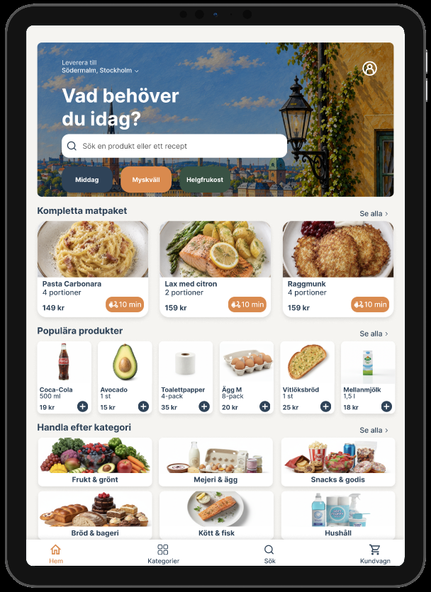
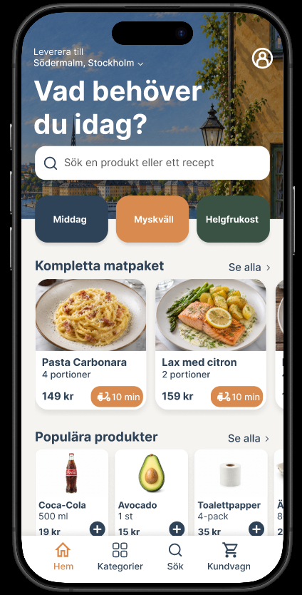
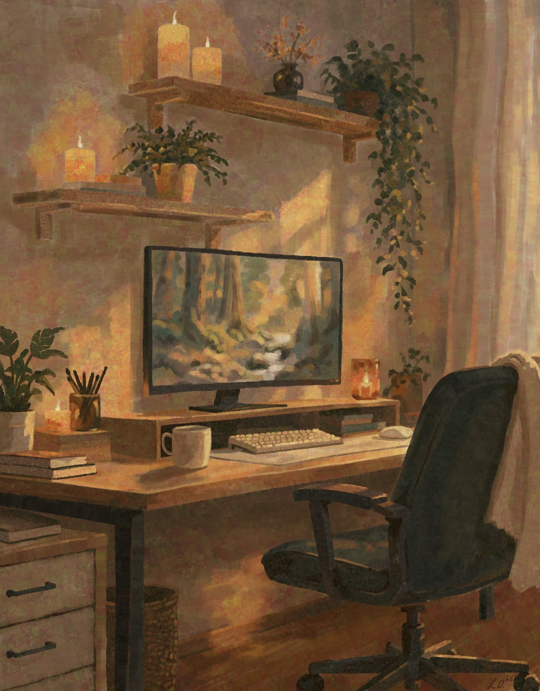

Research & användartester
Jag har arbetat med intervjuer, användarundersökningar, observationer och användartester, och använder insikterna för att prioritera vad som faktiskt behöver förändras.
UX DESIGNER • STOCKHOLM
Jag studerar UX design på Nackademin i Stockholm och gillar projekt där jag får förstå problemet ordentligt innan jag börjar forma lösningen.
Jag rör mig gärna mellan intervjuer, användartester, struktur och visuella detaljer, från första insikt till prototyp.
ARBETEN
Här samlar jag ett pågående kundsamarbete och projekt från utbildningen.
 WINGSPAN
WINGSPAN
Pågående redesign tillsammans med Wingspan, grundad i intervjuer, research och löpande dialog med företaget.
 VIKINGAMUSEET
VIKINGAMUSEET
Ett interaktivt museumskoncept där besökaren går från myter och fakta till quiz, karaktärsskapande och ett överlevnadsspel.


Ett responsivt UI koncept för mobil och iPad, med fokus på informationshierarki, komponenter och iteration efter feedback.
OM MIG
UX designstudent i Stockholm.
KOMPETENS & ARBETSSÄTT
Jag är legitimerad sjuksköterska i grunden och studerar idag UX design. Vården har lärt mig att lyssna, kommunicera tydligt och ta olika behov på allvar. Det perspektivet använder jag även i designarbetet.
Jag har arbetat med intervjuer, användarundersökningar, observationer och användartester, och använder insikterna för att prioritera vad som faktiskt behöver förändras.
I Figma och Miro arbetar jag med flöden, wireframes, prototyper och UI. Jag lägger mycket vikt vid hierarki, konsekvens och att iterera efter feedback.
Jag har arbetat med WCAG och Design for All och har grundläggande kunskap om GDPR. AI använder jag som stöd för idéer, struktur och analys, med hänsyn till källkritik och personuppgifter.
HTML, CSS och grundläggande C# hjälper mig att förstå hur gränssnitt byggs och vad som händer när en design ska bli en fungerande lösning.
UTANFÖR UX
En interaktiv illustration av mitt hemmakontor och några av sakerna jag gärna fastnar i utanför UX.

Hovra över bilden eller välj ett ämne.
Rita
Jag har alltid tyckt om att rita och måla. Det är nog där mycket av mitt intresse för färg, form och de där detaljerna som ingen annan verkar bry sig om började.
MER OM MIG
Vill du se den mer ordnade versionen av min bakgrund finns mitt CV här.
SÄG HEJ
Hör gärna av dig. Jag lovar att inte börja med en workshop direkt.